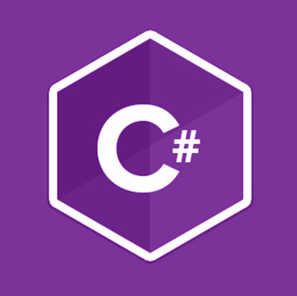
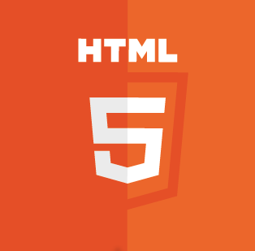
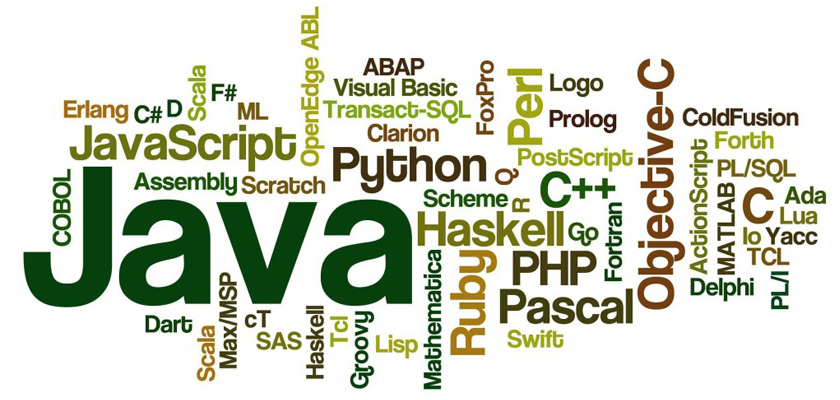
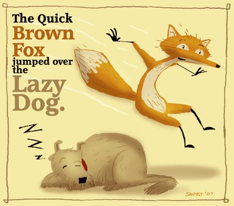
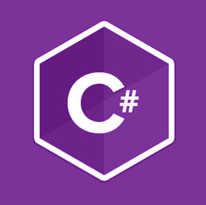
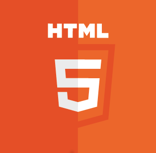

Osnovno o programiranju
Programiranje je pisanje uputa računalu što i kako učiniti, a izvodi se u nekom od programskih jezika. |
 |
Interpreter I Kompajler
Interpreter i kompajler su programi koji prevode napisani kod u stroju prepoznatljivom. |
 |
Jedini oblik programa koji računalo razumije.
Najmanja moguća razina programskog jezika, te je kao takav usko vezan uz građu samog računala tj. uz središnju jedinicu za obradu podataka
To znači da ako napišemo program u strojnom jeziku za jedno računalo, tj. jednu vrstu mikroprocesora on neće biti primjenjiv na drugoj vrsti mikroprocesora,
jer je za svaki mikroprocesor strojni jezik jedinstven. Stoga je korištenje strojnog jezika vrlo komplicirano.
Premda je korištenje strojnog jezika uvijek ograničeno na samo jedan određeni tip mikroprocesora i vrlo složeno, daje velike prednosti,
kao što su mogućnost boljeg iskorištavanja memorije računala, mogućnost izravnog dijelovanja na sklopovlje računala i veća brzina izvođenja samog programa.
ili jednostavno asembler je niži simbolički jezik orijentiran računalu (tj. prilagođen radu računala).
Svaka instrukcija u asembleru predstavlja jednu instrukciju strojnog jezika. Asembler je programski jezik niske razine, međutim, mnogo je napredniji u odnosu na strojni jezik.
Sam način programiranja nije bitno različit u odnosu na strojni jezik, ali je svaki binarni kod zamijenjen slovnom oznakom tako da je ovaj programski jezik mnogo razumljiviji.
Neke naredbe su LD, MOV, AND, OR, NOT, XOR, JMP, JNE, JE.
Ovisno o broju instrukcija strojnog jezika razlikujemo CISC i RISC procesore: CISC procesori imaju velik broj instrukcija, od kojih su mnoge složene pa se relativno sporo izvode,
dok RISC procesori imaju implementiran malen broj osnovnih operacija, koje se izvode relativno brzo.
programski jezik niske razine ili niži programski jezik je jezik koji pruža malo ili nimalo apstrakcija računalovog mikroprocesora.
Sintagma "niske razine" ne implicira da je jezik inferiorniji programskim jezicima visoke razine, već prije da se odnosi na malu ili nepostojeću količinu apstrakcije između jezika i strojnog jezika.
Zbog te su činjenice jezici niske razine često opisani kao "bliski sklopovlju".
Nazivi "visoke razine" i "niske razine" su također korišteni relativno - Java programer može smatrati C jezikom niske razine.
Programski jezik visoke razine ili viši programski jezik je programski jezik koji, u usporedbi sa programskim jezicima niske razine, može biti apstraktniji, lakši za uporabu, ili prenosiviji po platformama.
Takvi jezici često apstrahiraju CPU operacije poput modela pristupa memoriji i upravljanje djelokrugom.
Postoje jako puno tipova programskih jezika
Neki tipovi su:
Postoji mnogo programskih jezika. Velika količina tih programskih jezika se ni ne koristi.
postoji stranica na internetu koja ima bazu podataka skoro svih programskih jezika(1500+).
Svi kodovi vrte isti program koji je napisan na više jezika
Iako postoji toliko programskih jezika. večina ljudi koristi samo desetak progrmaskih jezika. To su:
|

|
||
|

|
|
|
|
|
|
|